Заголовок h3
Один из самых важных навыков, которые может дать работа с психотерапевтом
– умение в разных ситуациях по-разному обходиться со своими эмоциями.
Снять этот процесс с автопилота и перевести его в поле сознания.
Давайте, к примеру, разберем тревогу. Можно разложить перед собой целую
коллекцию доступных реакций и выбрать нужную:
Мы знаем, что нуждаться в помощи и поддержке в трудные периоды жизни абсолютно нормально для любого человека, и стремимся сделать психотерапию безопасной, удобной и доступной каждому
Анна Крымская
Что еще можно делать с тревогой?
- Управлять ей через что-то внешнее: включать музыку, которая создает
другое настроение, сесть за работу с цифрами, которая быстренько
активизирует другие участки мозга, читать блоги, которые вас успокаивают
и отвлекают. - А еще порой можно разрешить себе тревогу заесть чем-то вкусным. Это,
конечно, не самая здоровая стратегия, но в ряде ситуаций можно считать ее
вполне рабочей. Особенно, когда внутренний ресурс на нуле, а
поддерживающее окружение не в доступе.

Чем шире доступный вам репертуар реакций и чем более осознанно вы можете
выбирать из него то, что лучше всего подойдет в каждой конкретной ситуации,
тем больше будет ваша устойчивость к стрессу, депрессии, неопределенности,
да и к жизни в целом.
Мы знаем, что нуждаться в помощи и поддержке в трудные периоды жизни абсолютно нормально для любого человека, и стремимся сделать психотерапию безопасной, удобной и доступной каждому
Одна из ключевых задач психотерапии как раз и заключается в том, чтобы этот
репертуар расширять и обучать человека пользоваться доступными ему
реакциями в той последовательности, пропорции и объеме, которые подходят
именно ему. Без оглядки на то, "как правильно" или "как у других".
Чем шире доступный вам репертуар
реакций и чем более осознанно вы можете
выбирать из него то, что лучше всего
подойдет в каждой конкретной ситуации,
тем больше будет ваша устойчивость к
стрессу, депрессии, неопределенности, да и
к жизни в целом.
А еще порой можно разрешить себе тревогу
заесть чем-то вкусным.
Чем шире доступный вам репертуар реакций и чем более осознанно вы можете
выбирать из него то, что лучше всего подойдет в каждой конкретной ситуации,
тем больше будет ваша устойчивость к стрессу, депрессии, неопределенности,
да и к жизни в целом.
Упражнение #1
Нужно последовательно напрягать и расслаблять каждую мышцу в теле на несколько секунд. Напрягать стоит довольно сильно, чтобы потом отчетливее ощущать расслабляющий эффект. Начать можно с пальцев ног и постепенно подниматься вверх. Смысл в том, чтобы через напряжение дать стрессу выход, а затем вновь привести себя в спокойное состояние через расслабление
Что еще можно делать с тревогой?
- Управлять ей через что-то внешнее: включать музыку, которая
создает другое настроение, сесть за работу с цифрами, которая
быстренько активизирует другие участки мозга, читать блоги,
которые вас успокаивают и отвлекают. - А еще порой можно разрешить себе тревогу заесть чем-то
вкусным. Это, конечно, не самая здоровая стратегия, но в ряде
ситуаций можно считать ее вполне рабочей. Особенно, когда
внутренний ресурс на нуле, а поддерживающее окружение не в
доступе.
Чем шире доступный вам репертуар
реакций и чем более осознанно вы можете
выбирать из него то, что лучше всего
подойдет в каждой конкретной ситуации,
тем больше будет ваша устойчивость к
стрессу.
Чем шире доступный вам репертуар реакций и чем более осознанно вы можете
выбирать из него то, что лучше всего подойдет в каждой конкретной ситуации,
тем больше будет ваша устойчивость к стрессу, депрессии, неопределенности,
да и к жизни в целом.
Упражнение #2
Нужно последовательно напрягать и расслаблять каждую мышцу в теле на несколько секунд. Напрягать стоит довольно сильно, чтобы потом отчетливее ощущать расслабляющий эффект. Начать можно с пальцев ног и постепенно подниматься вверх. Смысл в том, чтобы через напряжение дать стрессу выход, а затем вновь привести себя в спокойное состояние через расслабление
Чем шире доступный вам репертуар реакций и чем более осознанно вы можете выбирать из него то, что лучше всего подойдет в каждой конкретной ситуации, тем больше будет ваша устойчивость к стрессу, депрессии, неопределенности, да и к жизни в целом.
Чем шире доступный вам репертуар реакций и чем более осознанно вы можете выбирать из него то, что лучше всего подойдет в каждой конкретной ситуации, тем больше будет ваша устойчивость к стрессу, депрессии, неопределенности, да и к жизни в целом.

Одна из ключевых задач психотерапии как раз и заключается в том, чтобы этот
репертуар расширять и обучать человека пользоваться доступными ему
реакциями в той последовательности, пропорции и объеме, которые подходят
именно ему. Без оглядки на то, "как правильно" или "как у других".
Упражнение #1
Нужно последовательно напрягать и расслаблять каждую мышцу в теле на несколько секунд. Напрягать стоит довольно сильно, чтобы потом отчетливее ощущать расслабляющий эффект. Начать можно с пальцев ног и постепенно подниматься вверх. Смысл в том, чтобы через напряжение дать стрессу выход, а затем вновь привести себя в спокойное состояние через расслабление